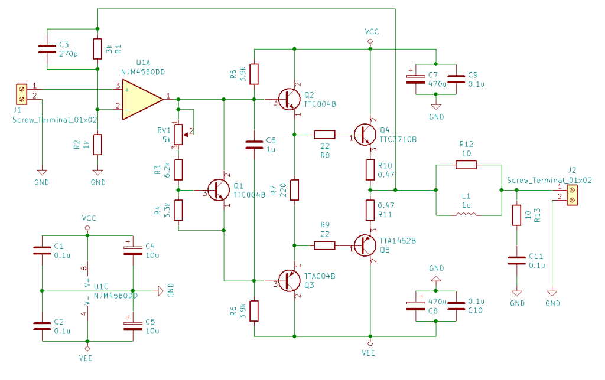
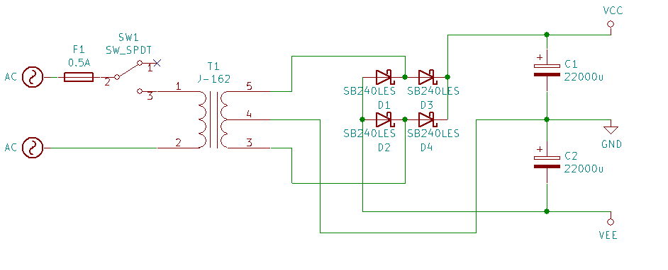
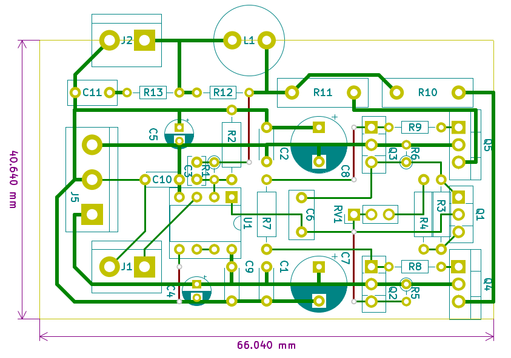
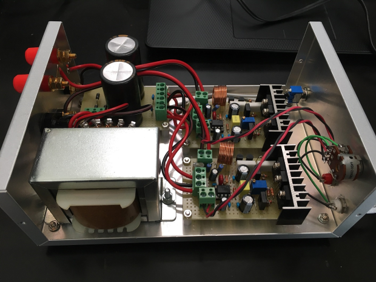
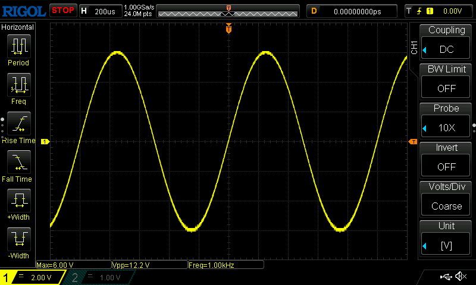
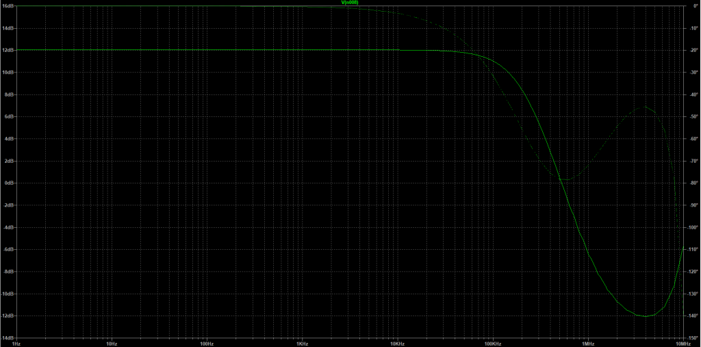
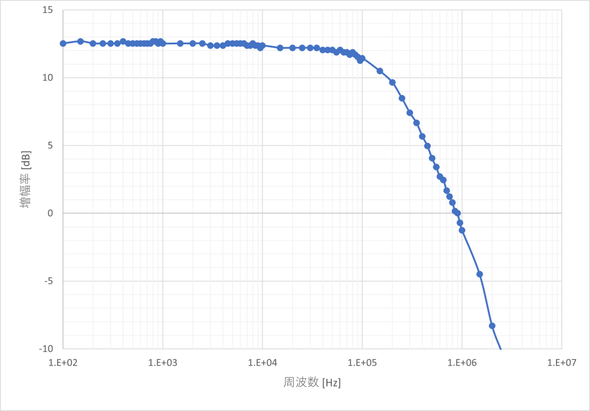
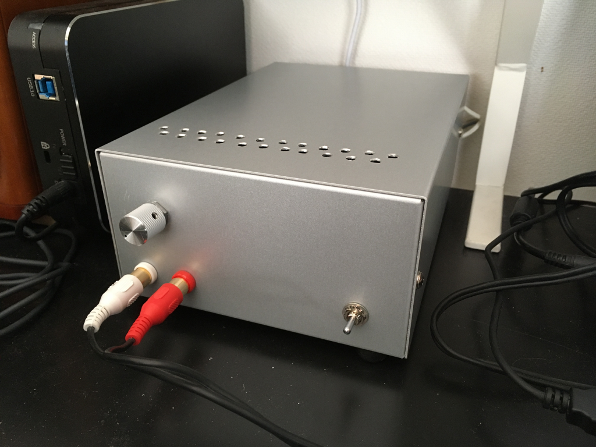

今まで数年間、鎌ベイアンプことSDAR-2100
を使って音楽を聴いていたのですが、アナログのものが欲しくなり製作しました。低予算で良いものが作れたので公開してみます。
最近は安価で小さなデジタルアンプの製品があふれていますが、アナログアンプでそれらの価格帯のものとなるとまず見かけることはありません。こういう時は自作してしまうのが手っ取り早いのかもしれません。
前に使っていた鎌ベイアンプでは10W+10Wの出力があったのに普段の音量では1W も出ていなかったので、低出力のものを作ることにしました。当たり前ですが、最大出力を下げれば全体のサイズもコストも低く抑えられます。できるだけ現行品を使うというのは、入手可能なディスクリートのトランジスタは減っているので入手性の良いものを使おう、ということです。

AB級アンプの回路図
オペアンプにバッファを付けただけのごく簡単な構成です。オペアンプは安価なNJM4580DDを選びました。電圧利得はおよそ12dBに設定しました。
出力段は東芝のスイッチング用の石、TTA1452B / TTC3710Bです。オーディオ用のものではありませんが、hFEの直線性がとても良いので使ってみることにしました。ドライバ段と
Vbeマルチプライヤには同じく東芝のTTA004B / TTC004Bを選びました。TO-126パッケージってなんだかかわいらしい見た目で好きです。
電源ラインのパスコンはすべて一般用です。電解コンデンサと並列に入っているのは積層セラミックコンデンサです。オーディオ用途としてはご法度なのかもしれませんが、信号経路ではないのでそう大きな差は出ないでしょう。
フィルムコンデンサは色の好みで適当に選んだので様々なものが混じっています。C3は東信工業のUPZシリーズ 、C6はFaithful LinkのMEMシリーズ 、C11はルビコンの
F2Dシリーズ です。多回転半固定抵抗器が青なので、赤青黄白と揃います。カラフルなのって良いですよね(?)

電源の回路図
こちらもひねりのない電源です。電源トランスは東栄変成器のJ-162を使いました。±8V 2Aで2000円ほどのものです。
整流ダイオードはショットキーバリアダイオードのSB240LESです。順電圧が低いので普通のダイオードを使うよりより電源電圧を高く取れます。
平滑コンデンサは安く手に入った ニチコンKWの22000uFを使いましたが、ここまでの容量は不要でした。半分ほどの容量でも十二分だと思われます。

基板の配線図
アンプ基板のパターン例です。秋月電子通商取り扱いのCタイプユニバーサル基板 (販売コード：100517) にぴったり収まります。緑色が裏面配線、赤色が表面配線です。
TTA1452B / TTC3710Bは端子配列がECBではないので気を付けてください。
NJM4580DDは2回路入りですが、各チャンネルの基板に1粒ずつ載せています。使用しない回路の処理を忘れずにしてください。
コイルは直径1.0mmのUEW線を単3電池に9～10回程度巻き付けて作るとちょうどいい具合の値になるはずです。精度の必要な部品ではないので適当でいいと思います。

ケースへの組み込み
ケース (MB14-8-20 / タカチ) へ組み込みました。
回路図には書かれていませんが、2SA1015 / 2SC1815を出力ショート保護回路用に追加しています。東芝製の2SA1015 / 2SC1815
はすでにディスコンですが、他社製のものが出回っています。
出力段とVbe
マルチプライヤのトランジスタは熱結合させるため同じヒートシンクに固定します。初めから3つ分の穴が開いているヒートシンクはあまり売っていないと思うので、適当なヒートシンクに自分で穴をあけるのが良いでしょう。今回はグローバル電子の
17PB046-01025を使用しました。
入力のRCA端子は絶縁タイプにするとグランドループを防止できます。配線はツイストにするとハムノイズが乗りにくくなります。
TTA1452B / TTC3710Bのエミッタ間の電圧を測ることでバイアス電流を知ることができます。半固定抵抗を回して15ｍA程度になるように調整しました。エミッタ間の抵抗が
0.47+0.47 = 0.94Ω なので、およそ14mVになるようにすればよいです。
3.9Ω 抵抗負荷で1kHzの正弦波を入れます。

正弦波出力
ボリュームを少し絞った状態で測定していますが、4.5Wほど出ています。目標出力の4W
は達成できました。全開にすればもう少しだけ出ます(歪みが出てきますが)。この動作テストでは片チャンネルずつ測定しています。両チャンネル同時に連続して4.5W
を出すことは電源の容量が足りなくてできません。両チャンネル同時にフルパワーで使うことはないので、問題なしとします。
歪み率は測っていませんが、見た目でわかる歪みはありません。聴覚上も問題ありませんでした。LTspiceのシミュレーションでは歪率は0.013％ (1kHz、8Vp-p出力、4Ω抵抗負荷時)
となりました。実際の回路ではこの値からずれていることも十分考えられますが、0.1%を下回っていればその違いは耳ではほとんどわからないでしょう。
シミュレーションでの周波数特性です。

周波数特性
信号経路にコンデンサが入っていないので、0Hzから増幅できています。カットオフ周波数は190kHzくらいです。
＊2022/8/14追記
オシロスコープで実機の周波数特性を取ってみました。垂直軸分解能が8bitしかないのであまり参考になりませんが、概形はシミュレーション通りといえそうです。

実機の周波数特性

完成したアンプ
ポップノイズもDC漏れもほぼありません。トランスからの磁束漏れを心配していたのですが、ハムノイズも出ませんでした。
1か月ほど使い込んだのですが、とても聞きやすいです。スピーカーはVictorのSP-FS1
につないで聴いているのですが、こんなに鳴るものだったのかと驚きました。出力は小さいですが、十分すぎる音量が出ます。定位が非常に正確で、極端にパート数の多い曲であっても楽器の位置がはっきりと分かり楽しいです。とても満足のいくものに仕上がりました。
| 部品名 | 型番 | 備考 |
|---|---|---|
| オペアンプ | NJM4580DD | 新日本無線 |
| 出力トランジスタ | TTA1452B / TTC3710B | 東芝 |
| ドライバトランジスタ | TTA004B / TTC004B | 東芝 |
| 電源トランス | J-162 | 東栄変成器 |
| 整流ダイオード | SB240LES | PANJIT |
| 平滑コンデンサ | KWシリーズ22000uF 25V | ニチコン |
| ケース | MB14-8-20 | タカチ |
その他部品は汎用品。R10-R13の定格電力は余裕を持たせてください。
最終的に8000円ほどで制作できました。